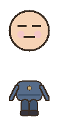

conversation lane
session: draft
[system] lane ready
[you] type a command to continue

未読み込み
フィールドを選択してキーの組み合わせを押してください（Escで既定値に戻します）
選択したAIツールはターミナルの起動コマンド判別に使われます。 AI判定ONの場合は完了/入力待ちの通知と判定結果で状態検出します。 AI判定OFFの場合は端末出力のみで状態を判定します。 サブワーカーは各ターミナルで独立に動作し、閾値以上なら入力代行・未満なら表示専用アドバイスを行います。 状態デバッグログONの場合は、状態変化と判定イベントを JSONL で保存します（解析用）。